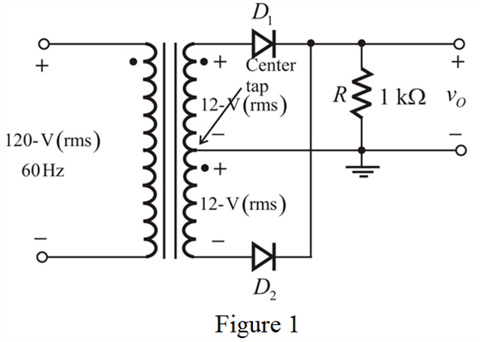

Step 1:
Calculate the secondary voltage for a step-down transformer.
Draw the modified circuit diagram.

Step 2:
Calculate the peak voltage of the rectified output.

Calculate the peak value of the output voltage.

Therefore, the peak value of the output voltage, is  .
.
The input to the Full -wave rectifier is,

Then the output is obtained with the help of equation (1) and the diode will conduct during both the half cycles.
Step 3:
Draw the input/output waveforms together.
Step 4:
From the waveform,  is the angle at which the input signal reaches
is the angle at which the input signal reaches  and the diode starts conducting. The diode conduction terminates at
and the diode starts conducting. The diode conduction terminates at  and the hence the total conduction angle is
and the hence the total conduction angle is  or .
or .
The expression for the diode voltage is,
Substitute  for
for  and for
and for  .
.
Step 5:
Hence, the diode conduction terminates at

Therefore, the conduction angle in each half cycle is

The total conduction angle over one full cycle is,
Step 6:
Calculate the fraction of cycle that the diode conducts.
Therefore, the diode conducts for .
Calculate the average value (dc component) of the output.

The limits of the integration are from:

From, the circuit diagram, the output is,
Where, in the interval  and also the same in the interval
and also the same in the interval 
The expression for the output voltage is,
Step 7:
The average output voltage is,
Therefore, the average output voltage, is .
Step 8:
The current through the resistor is,
The average current is,

Substitute for and  for
for  .
.
Therefore, the average current in the load,  is .
is .